Código
grViz("
digraph {
graph [ranksep = 0.3, rankdir = LR]
node [shape=circle]
L
node [shape=plaintext]
y_1
y_2
y_3
edge [minlen = 3]
L -> y_1
L -> y_2
L -> y_3
}
")#, width = 200, height = 50)En esta parte veremos más detalles del flujo Bayesiano de trabajo, partiendo del plantwamiento de M. Betancourt
Veamos el diagrama que se propone en este artículo:
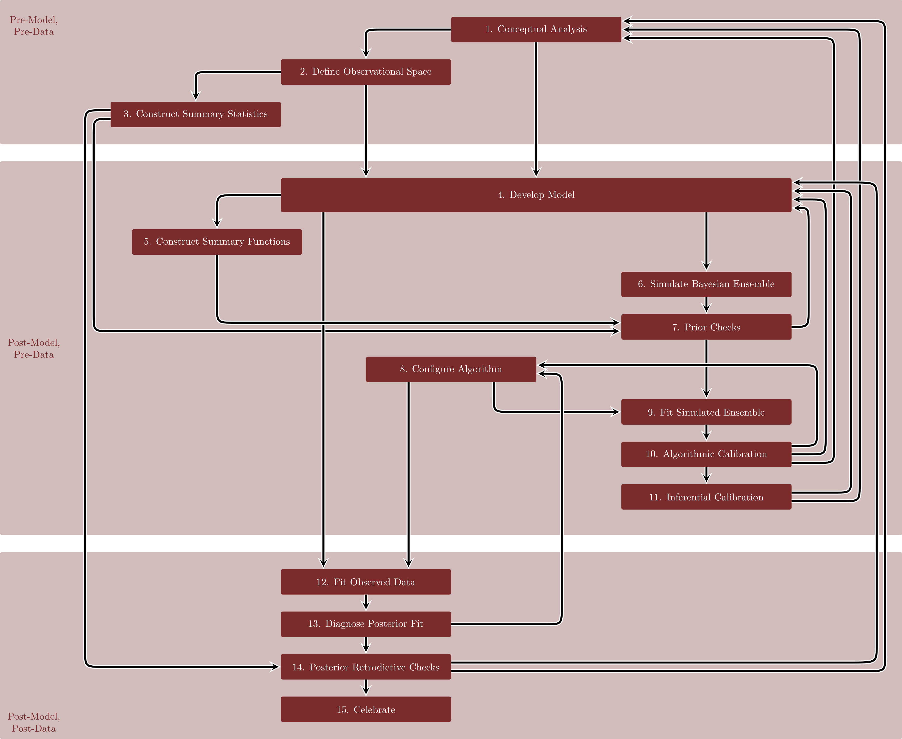
Este flujo está dividido en tres partres: una pre-modelo y pre-datos, una pre-datos, y uno cuando ya tenemos modelo y datos. Este enfoque es robusto desde el punto de vista estadístico y computacional, aunque está escrito de una forma un poco diferente a como lo planteamos en secciones anteriores.
Pre-modelo y pre-datos: el análisis conceptual, definición de espacio de observaciones y construcción de estadísticas resumen todos son basados en conocimiento de dominio y deben tener una orientación causal. En esta parte es donde planteamos diagramas causales, modelos generativos, y qué cantidades (con interpretación causal) que nos interesa estimar.
En la segunda parte, construimos modelos y definimos estimadores en función de estos modelos. Aquí es donde hacemos simulaciones para entender nuestra información a priori o inicial, y las consecuencias que tienen nuestras primeras decisiones de modelación.
Para introducir algunos análisis que consideraremos planteamos una situación simple, donde estamos midiendo los resultados de 100 detectores de partículas en un experimento, todos intentando medir la misma fuente. En este caso, todos los detectores están midiendo la misma cantidad, pero hay cierto error en la medición, y podemos escribir el diagrama simple, que supone que dada la fuente las observaciones son observaciones independientes.
grViz("
digraph {
graph [ranksep = 0.3, rankdir = LR]
node [shape=circle]
L
node [shape=plaintext]
y_1
y_2
y_3
edge [minlen = 3]
L -> y_1
L -> y_2
L -> y_3
}
")#, width = 200, height = 50)Como las observaciones son enteros, supondremos que las observaciones son Poisson con media \(\lambda_F\). Nos interesa entonces estimar \(\lambda_F\) que nos da la intensidad de la fuente.
Para poner una inicial necesitamos concocimiento de dominio. Supongamos que sabemos que para este tipo de fuentes, detectores, y tiempo de detección es extremo obtener conteos mayores a 25 partículas: los pondremos en el 1% de la cola superior, por ejemplo. Podemos experimentar con valores para \(\sigma\) en una normal truncada en cero.
# valores de la inincial
lambda <- seq(3, 20, 2)
# simular observaciones
q_poisson <- lambda |> map_df(~ tibble(lambda = .x, q_99 = quantile(rpois(10000, .x), probs = 0.99)))
q_poisson# A tibble: 9 × 2
lambda q_99
<dbl> <dbl>
1 3 8
2 5 11
3 7 14
4 9 17
5 11 19
6 13 22
7 15 24
8 17 28
9 19 30Y podemos ver que requerimos aproximadamente \(\lambda\leq 99\) con alta probabilidad. Experimentando, podemos ver que si \(\sigma=6\) es un valor razonable para la normal truncada:
quantile(abs(rnorm(10000, 0, 6)), probs = 0.99) 99%
15.54335 Ahora construimos nuestro modelo generativo y examinamos sus consecuencias. Simularemos 150 repeticiones de las 100 observaciones que esperamos:
library(cmdstanr)This is cmdstanr version 0.7.1- CmdStanR documentation and vignettes: mc-stan.org/cmdstanr- CmdStan path: /home/runner/.cmdstan/cmdstan-2.34.0- CmdStan version: 2.34.0
A newer version of CmdStan is available. See ?install_cmdstan() to install it.
To disable this check set option or environment variable CMDSTANR_NO_VER_CHECK=TRUE.N <- 100
R <- 1500
sim_datos <- list(N = N)
mod_ensemble <- cmdstan_model("src/flujo-mb/1-simular-ensemble.stan")
print(mod_ensemble)data {
int N;
}
generated quantities {
real<lower=0> lambda;
array[N] int y;
// Simular configuracion del modelo a partir de inicial
lambda = abs(normal_rng(0, 6));
// Simular datos del modelo observacional
for (n in 1:N){
y[n] = poisson_rng(lambda);
}
}sims_priori <- mod_ensemble$sample(data = sim_datos,
iter_sampling = R, chains = 1, refresh = R, seed = 4838282,
fixed_param = TRUE)Running MCMC with 1 chain...
Chain 1 Iteration: 1 / 1500 [ 0%] (Sampling)
Chain 1 Iteration: 1500 / 1500 [100%] (Sampling)
Chain 1 finished in 0.0 seconds.Ahora podemos examinar algunas posibles configuraciones del modelo junto con las observaciones que esperaríamos ver:
sims_tbl <- sims_priori$draws(format = "df")
obs_priori_tbl <- sims_tbl |>
as_tibble() |>
pivot_longer(cols = starts_with("y"), names_to = "y", values_to = "valor") |>
separate(y, into = c("y", "n"), sep = "[\\[\\]]") |> select(-y)
ggplot(obs_priori_tbl |> filter(.draw < 5), aes(x = valor)) +
geom_histogram(bins = 30) +
facet_wrap(~lambda) +
labs(subtitle = "Simulaciones de observaciones a priori")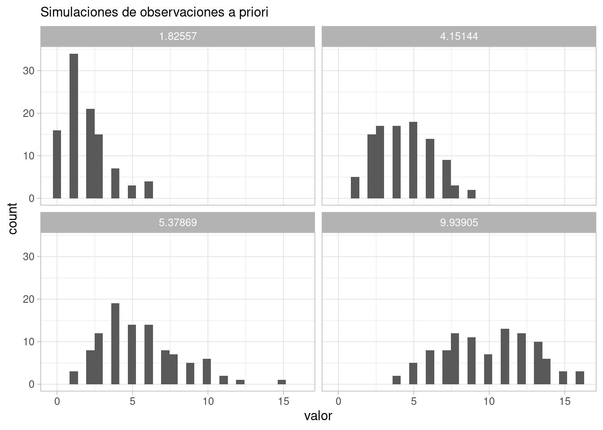
Y podemos resumir estas simulaciones como
ggplot(obs_priori_tbl |> group_by(.draw, valor) |> count() |>
group_by(valor) |>
summarise(mediana = median(n), q_10 = quantile(n, 0.1), q90 = quantile(n, 0.9)) |>
pivot_longer(cols = c(mediana, q_10, q90), names_to = "tipo", values_to = "resumen"),
aes(x = valor)) +
geom_line(aes(y = resumen, group = tipo)) +
labs(subtitle = "Simulaciones de observaciones a priori")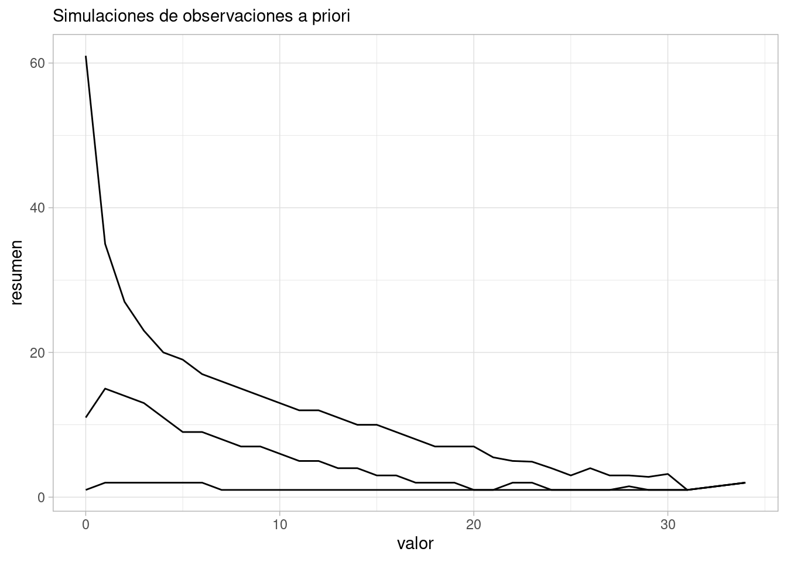
Y vemos que es muy poco probable observar cantidades medidas por arriba de 25:
obs_priori_tbl |> mutate(mayor_25 = valor > 25) |>
summarise(mayor_25 = mean(mayor_25)) # A tibble: 1 × 1
mayor_25
<dbl>
1 0.000587Bajo los supuestos del modelo, ahora podemos proponer nuestro algoritmo de estimación, y checar en primer lugar que funciona apropiadamente. En este ejemplo, tomaremos solamente 40 simulaciones y ajustaremos en cada caso el siguiente consecuencia de nuestros supuestos. Usualmente podemos usar 100 o más.
En este paso podemos ajustar nuestro muestreador, número de cadenas y su longitud, etc.
mod_2 <- cmdstan_model("src/flujo-mb/2-modelo-poisson.stan")
print(mod_2)data {
int N;
array[N] int y;
}
parameters {
real<lower=0> lambda;
}
model {
lambda ~ normal(0, 6);
y ~ poisson(lambda);
}
generated quantities {
array[N] int y_sim;
for (n in 1:N) {
y_sim[n] = poisson_rng(lambda);
}
}ajustes_apriori <- purrr::map(1:40, function(rep){
y <- obs_priori_tbl |> filter(.draw == rep) |> pull(valor)
datos_sim_lst <- list(y = y, N = length(y))
ajuste <- mod_2$sample(data = datos_sim_lst,
iter_sampling = 1000, chains = 3, parallel_chains = 3, seed = 4838282,
refresh = 0, show_messages = FALSE)
list(ajuste = ajuste, lambda_sim = sims_tbl$lambda[rep])
})Podemos checar por ejemplo tamaño efectivo de muestra, rhat o divergencias:
ajustes_apriori |> map_df(~ .x$ajuste$summary("lambda")) |>
ggplot(aes(x = ess_bulk)) + geom_histogram(bins = 30) 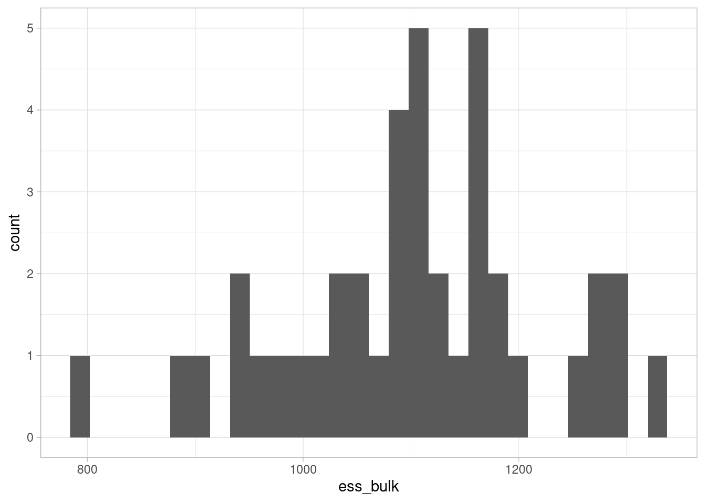
ajustes_apriori |> map_dbl(
~ .x$ajuste$diagnostic_summary("divergences")$num_divergent |> sum()) |>
sum()[1] 0Adicionalmente, podemos ver si recuperamos o no los parámetros de la simulación. En primer lugar, calculamos el cuantil del valor verdadero para la posterior de la simulación:
resumen_cuantiles_tbl <- ajustes_apriori |> map_df(function(ajuste_lst){
lambda_sim <- ajuste_lst$lambda_sim
cuantiles_tbl <- ajuste_lst$ajuste$draws("lambda", format = "df") |>
mutate(menor = lambda_sim < lambda) |>
summarise(q_menor = mean(menor))
cuantiles_tbl |> mutate(lambda_sim = lambda_sim)
})Ahora podemos hacer una gráfica de cuantiles: si estamos recuperando correctamente los parámetros, la distribución de los cuantiles de los valores verdaderos en la posterior debe ser cercana a uniforme (pues si \(y\sim F\), entonces \(P(F(y)<t)) = t\) para cualquier \(t\)):
resumen_cuantiles_tbl# A tibble: 40 × 2
q_menor lambda_sim
<dbl> <dbl>
1 0.661 1.83
2 0.7 5.38
3 0.827 4.15
4 0.489 9.94
5 0.866 1.54
6 0.783 7.33
7 0.293 8.82
8 0.604 5.14
9 0.08 1.28
10 0.312 7.34
# ℹ 30 more rowsggplot(resumen_cuantiles_tbl, aes(sample = q_menor)) +
geom_qq(distribution = stats::qunif) +
geom_abline(slope = 1, intercept = 0) +
labs(subtitle = "Recuperación de valores en la posterior")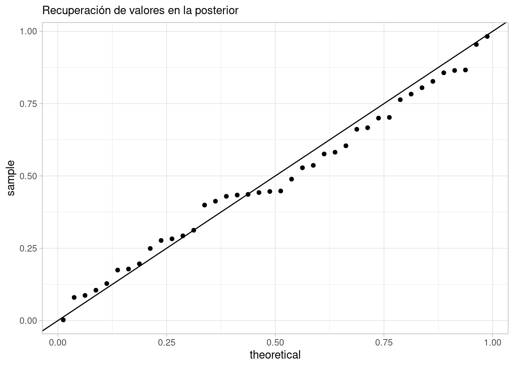
En este caso, vemos que estamos recuperando adecuadamente los valores que pusimos en la simualción. Además de esta gráfica de cuantiles, hay otras alternativas que puedes ver aquí.
Finalmente veremos si las posteriores obtenidas dan inferencias que sean suficientes para nuestros propósitos. Queremos determinar, con el modelo planteado, tamaño de datos e iniciales:
Abajo presentamos una demostración de M. Betancourt de cómo pueden verse estos problemas:
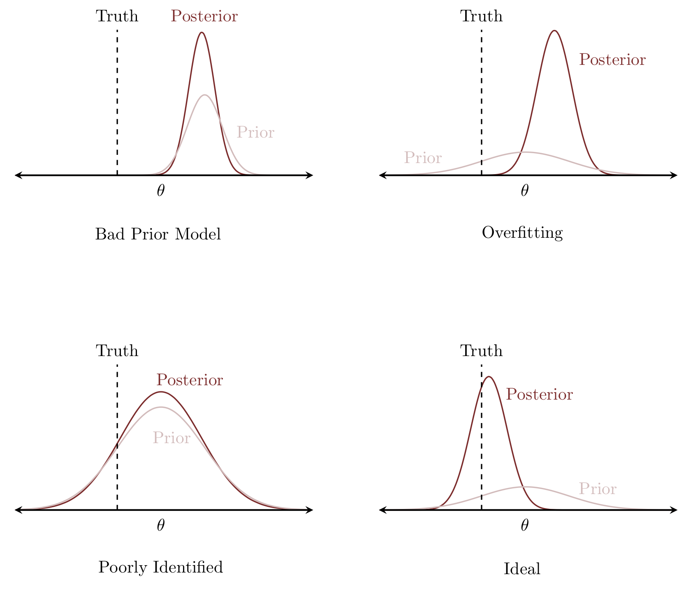 Y podemos calcular, para un parámetro particular, dos valores útiles. Primero, el valor z posterior de cada parámetro, que está dado por:
\[ z(\theta^*, y) = \frac{\theta^* - \mu_{post}({\theta}|y)}{\sigma_{post}(\theta|y)}\]
donde \(\theta^*\) es el valor verdadero. Esta es también una medida de qué tanto está el valor verdadero en el centro de la distribución o en una cola de la posterior, y mide, en cada simulación, con qué precisión recuperamos con la posterior el valor verdadero. Valores chicos indican que la posterior está altamente concentrada en el valor verdero.
Igualmente necesitamos la contracción posterior, que podemos definir como
\[c(y) = 1 - \frac{Var_{post}(\theta|y)}{Var_{previa}(\theta)}\]
y esta cantidad mide qué tanto los datos informan sobre el parámetro con respecto a la información previa. Contracciones cercanas a cero indican que no aprendimos mucho por encima de lo que sabíamos con la inicial.
Usualmente queremos que la contracción sea cercana a 1, y qué los valores \(z\) estén cercanos a cero. Sin embargo, podemos encontrar:
Podemos hacer esta gráfica para nuestro ejemplo de arriba:
contraccion_z_tbl <- ajustes_apriori |> map_df(function(ajuste_lst){
lambda_sim <- ajuste_lst$lambda_sim
sd_previa <- 3.69 # ver inicial de lambda
post_media_sd_tbl <- ajuste_lst$ajuste$draws("lambda", format = "df") |>
summarise(media_post = mean(lambda), sd_post = sd(lambda))
tibble(contraccion = 1 - post_media_sd_tbl$sd_post^2/sd_previa^2,
z = (lambda_sim - post_media_sd_tbl$media_post)/post_media_sd_tbl$sd_post)
})ggplot(contraccion_z_tbl, aes(x = contraccion, y = z)) +
geom_point() +
xlab("Contracción") + ylab("Valor z") +
xlim(0, 1)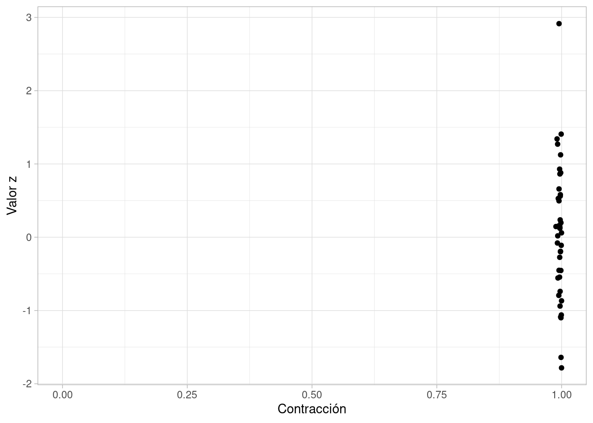
Y en este caso, obtenemos resultados informativos (alta contracción), que según los valores \(z\) capturan adecuadamente los valores verdaderos.
Nótese que esta forma de ver el sobreajuste está más relacionada con la inferencia acerca de parámetros de interés que al sobreajuste en modelos predictivos.
Aunque también con modelos bayesianos podemos hacer validación cruzada para predicciones (ya sea tradicional o con métodos computacionalmente más eficientes que aproximan el desempeño predictivo), nuestro objetivo principal no es obtener buenas predicciones, sino tener inferencia correcta e informativa acerca de las cantidades de interés.
El punto de vista predictivo también es importante, y puedes ver el texto de McElreath para más detalles.
Finalmente, vamos al ajuste de datos reales y diagnósticos asociados
Ya hemos visto antes cómo hacer diagnósticos del ajuste (checar MCMC, divergencias, etc.):
datos_obs <- read_csv("../datos/ejemplo-flujo.csv")Rows: 100 Columns: 1
── Column specification ────────────────────────────────────────────────────────
Delimiter: ","
dbl (1): y
ℹ Use `spec()` to retrieve the full column specification for this data.
ℹ Specify the column types or set `show_col_types = FALSE` to quiet this message.datos_lst <- list(y = datos_obs$y, N = nrow(datos_obs))
ajuste <- mod_2$sample(data = datos_lst,
iter_sampling = 1000, refresh = 1000, chains = 3, parallel_chains = 3, seed = 282)Running MCMC with 3 parallel chains...
Chain 1 Iteration: 1 / 2000 [ 0%] (Warmup)
Chain 1 Iteration: 1000 / 2000 [ 50%] (Warmup)
Chain 1 Iteration: 1001 / 2000 [ 50%] (Sampling)
Chain 1 Iteration: 2000 / 2000 [100%] (Sampling)
Chain 2 Iteration: 1 / 2000 [ 0%] (Warmup)
Chain 2 Iteration: 1000 / 2000 [ 50%] (Warmup)
Chain 2 Iteration: 1001 / 2000 [ 50%] (Sampling)
Chain 2 Iteration: 2000 / 2000 [100%] (Sampling)
Chain 3 Iteration: 1 / 2000 [ 0%] (Warmup)
Chain 3 Iteration: 1000 / 2000 [ 50%] (Warmup)
Chain 3 Iteration: 1001 / 2000 [ 50%] (Sampling)
Chain 3 Iteration: 2000 / 2000 [100%] (Sampling)
Chain 1 finished in 0.1 seconds.
Chain 2 finished in 0.0 seconds.
Chain 3 finished in 0.1 seconds.
All 3 chains finished successfully.
Mean chain execution time: 0.1 seconds.
Total execution time: 0.2 seconds.ajuste$summary("lambda") |>
select(mean, sd, q5, q95, rhat, ess_bulk, ess_tail)# A tibble: 1 × 7
mean sd q5 q95 rhat ess_bulk ess_tail
<dbl> <dbl> <dbl> <dbl> <dbl> <dbl> <dbl>
1 5.95 0.244 5.56 6.36 1.00 1366. 1555.Los diagnósticos no muestran problemas.
Ahora simulamos datos observados de la predictiva posterior ajustada, y comparamos con los datos observados.
sims_post_pred_tbl <- ajuste$draws("y_sim", format = "df") |>
as_tibble() |>
pivot_longer(cols = starts_with("y_sim"), names_to = "y", values_to = "valor") |>
separate(y, into = c("y_sim", "n"), sep = "[\\[\\]]", extra = "drop") |> select(-y_sim)ggplot(sims_post_pred_tbl |> filter(.draw <=10) |>
bind_rows(datos_obs |> rename(valor = y) |> mutate(.draw = 11)),
aes(x = valor)) +
geom_histogram(bins = 30) +
facet_wrap(~.draw) +
labs(subtitle = "Chequeo predictivo posterior")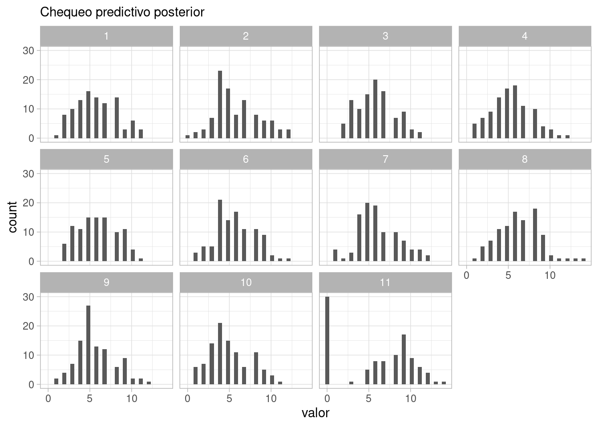
Y vemos un desajuste claro en el modelo: los datos tienen exceso de ceros, y los datos que nos son cero tienden a ser mayores que los simulados. En este punto, es necesario regresar al análisis conceptual, pues hay algo fundamental en el proceso generador de datos que no estamos considerando
Supongamos que después de investigar, nos enteramos que es común que algunos detectores fallen o estén defectuosos. En ese caso, marcan cero. Nótese que la situación sería diferente, por ejemplo, si los detectores que se desbordan marcan cero, etc. Es necesario regresar entonces al análisis conceptual, y repetir todo el proceso.
Nuestros siguientes pasos dependen de que podamos entender cuál es la razón del exceso de ceros con respecto a nuestro modelo inicial. En este caso, tenemos que considerar que hay cierta probabilidad de que los detectores fallen.
Proponemos entonces un modelo como sigue: \(y_n = 0\) con probabilidad \(\pi\), y \(y_n\sim \text{Poisson}(\lambda)\) con probabilidad \(1-\pi\). El modelo de datos se puede escribir como sigue:
\[p(y|\lambda, \pi) = (1-\pi) W + \pi I(y=0)\] que es una Poisson reescalada con una masa \(\pi\) en cero.
Recorremos los pasos con nuestro nuevo modelo, y consideraremos qué es lo que sucede en la calibración algorítmica:
N <- 100
R <- 1500
sim_datos <- list(N = N)
mod_ensemble <- cmdstan_model("src/flujo-mb/2-simular-ensemble.stan")
print(mod_ensemble)data {
int N;
}
generated quantities {
real<lower=0> lambda;
real<lower=0, upper=1> p;
array[N] int y;
// Simular configuracion del modelo a partir de inicial
lambda = abs(normal_rng(0, 6));
p = beta_rng(1, 1);
// Simular datos del modelo observacional
for (n in 1:N){
y[n] = 0;
if(!bernoulli_rng(p)){
y[n] = poisson_rng(lambda);
}
}
}sims_priori <- mod_ensemble$sample(data = sim_datos,
iter_sampling = R, chains = 1, refresh = R, seed = 4838282,
fixed_param = TRUE)Running MCMC with 1 chain...
Chain 1 Iteration: 1 / 1500 [ 0%] (Sampling)
Chain 1 Iteration: 1500 / 1500 [100%] (Sampling)
Chain 1 finished in 0.0 seconds.Ahora podemos examinar algunas posibles configuraciones del modelo junto con las observaciones que esperaríamos ver:
sims_tbl <- sims_priori$draws(format = "df")
obs_priori_tbl <- sims_tbl |>
as_tibble() |>
pivot_longer(cols = starts_with("y"), names_to = "y", values_to = "valor") |>
separate(y, into = c("y", "n"), sep = "[\\[\\]]") |> select(-y)
ggplot(obs_priori_tbl |> filter(.draw < 5), aes(x = valor)) +
geom_histogram(bins = 30) +
facet_wrap(~lambda) +
labs(subtitle = "Simulaciones de observaciones a priori")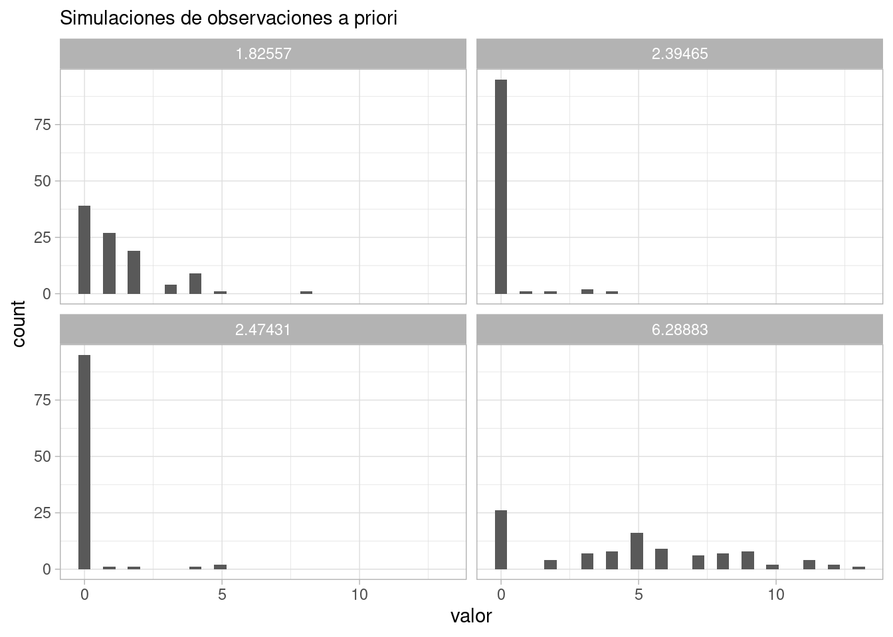
Y podemos resumir estas simulaciones como
ggplot(obs_priori_tbl |> group_by(.draw, valor) |> count() |>
group_by(valor) |>
summarise(mediana = median(n), q_10 = quantile(n, 0.1), q90 = quantile(n, 0.9)) |>
pivot_longer(cols = c(mediana, q_10, q90), names_to = "tipo", values_to = "resumen"),
aes(x = valor)) +
geom_line(aes(y = resumen, group = tipo)) +
labs(subtitle = "Simulaciones de observaciones a priori")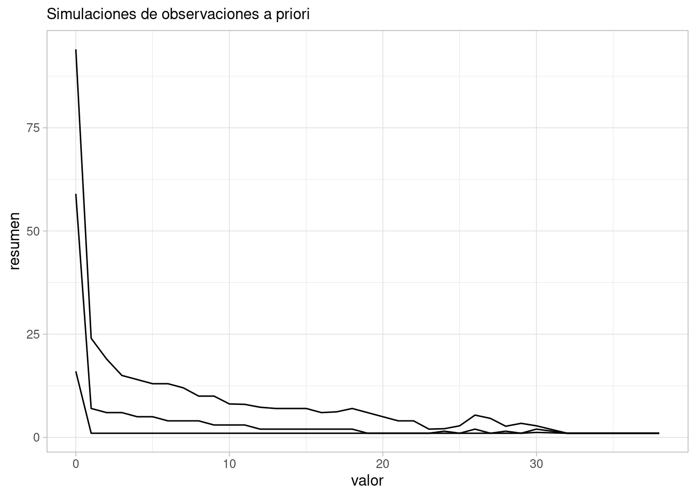
Y vemos que es muy poco probable observar cantidades medidas por arriba de 25:
obs_priori_tbl |> mutate(mayor_25 = valor > 25) |>
summarise(mayor_25 = mean(mayor_25)) # A tibble: 1 × 1
mayor_25
<dbl>
1 0.00036Bajo los supuestos del modelo, ahora podemos proponer nuestro algoritmo de estimación, y checar en primer lugar que funciona apropiadamente. En este ejemplo, tomaremos solamente 40 simulaciones y ajustaremos en cada caso el siguiente consecuencia de nuestros supuestos. Usualmente podemos usar 100 o más.
En este paso podemos ajustar nuestro muestreador, número de cadenas y su longitud, etc.
mod_2 <- cmdstan_model("src/flujo-mb/2-modelo-poisson-cero-inflado.stan")
print(mod_2)data {
int N;
array[N] int y;
}
parameters {
real<lower=0> lambda;
real<lower=0, upper=1> p;
}
model {
lambda ~ normal(0, 6);
p ~ beta(1, 1);
for(n in 1:N){
real lpdf = poisson_lpmf(y[n] | lambda);
if(y[n] == 0){
target += log_mix(p, 0, lpdf);
} else {
target += log(1-p) + lpdf;
}
}
}
generated quantities {
array[N] int y_sim;
for (n in 1:N) {
real zero = bernoulli_rng(p);
if (zero == 1) {
y_sim[n] = 0;
} else {
y_sim[n] = poisson_rng(lambda);
}
}
}ajustes_apriori <- purrr::map(1:40, function(rep){
y <- obs_priori_tbl |> filter(.draw == rep) |> pull(valor)
datos_sim_lst <- list(y = y, N = length(y))
ajuste <- mod_2$sample(data = datos_sim_lst,
iter_sampling = 1000, chains = 3, parallel_chains = 3, seed = 4838282,
refresh = 0, show_messages = FALSE)
list(ajuste = ajuste, lambda_sim = sims_tbl$lambda[rep], p_sim = sims_tbl$p[rep])
})Y vemos que nos encontramos con problemas. Examinamos los ajustes que producen divergencias:
divergencias_lst <- ajustes_apriori |> map_dbl(
~ .x$ajuste$diagnostic_summary("divergences")$num_divergent |> sum()) Warning: 4 of 3000 (0.0%) transitions ended with a divergence.
See https://mc-stan.org/misc/warnings for details.
Warning: 4 of 3000 (0.0%) transitions ended with a divergence.
See https://mc-stan.org/misc/warnings for details.
Warning: 4 of 3000 (0.0%) transitions ended with a divergence.
See https://mc-stan.org/misc/warnings for details.div_sim <- which(divergencias_lst > 0)
div_sim[1] 17 22 35Veamos entonces que valores de \(p\) y \(lambda\) corresponden:
diag_tbl <- obs_priori_tbl |> as_tibble() |> select(lambda, p, .draw) |> unique() |>
filter(.draw <= 40) |>
mutate(problemas = .draw %in% div_sim)
ggplot(diag_tbl, aes(x = lambda, y = p, color = problemas, size = problemas)) +
geom_point() +
labs(subtitle = "Problemas de divergencia")Warning: Using size for a discrete variable is not advised.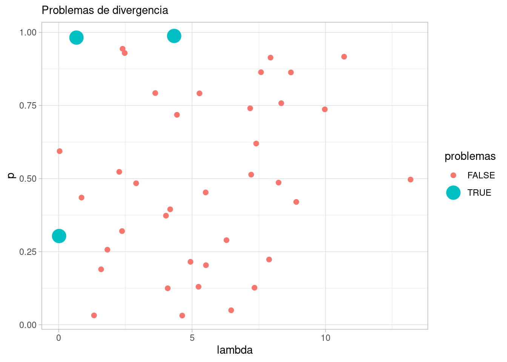
Y el problema aparece con valores extremos de \(p\) y valores chicos de \(\lambda\) (prueba haciendo más ajustes). Cuando estos valores se presentan, tenemos observaciones que son principalmente ceros, y es difícil distinguir entre ceros que se deben a fallas en los detectores y ceros que se deben a una tasa baja de Poisson.
filter(obs_priori_tbl |> filter(.draw == 17)) |>
select(valor) |> summarise(num_ceros = sum(valor == 0), num_no_ceros = sum(valor > 0))# A tibble: 1 × 2
num_ceros num_no_ceros
<int> <int>
1 100 0Puedes ver más de esto en la discusión de M. Betancourt en aquí.
En este punto, es necesario otra vez regresar al análisis conceptual: los datos no tienen información acerca de las causas de los ceros. En primer lugar, podríamos informarnos acerca de qué tan común es que los detectores fallen (o si han existido chequeos recientes que nos den confianza que una proporción razonable está funcionando), o adicionalmente cuál es el rango de tasas mínimas razonables que se espera para el tipo de fuente con el que se está experimentando. En este caso, podríamos evitar las zonas degeneradas y mal identificadas:
La continuación de este caso (con otras dos interaciones) puedes seguirla en la misma referencia antes citada.